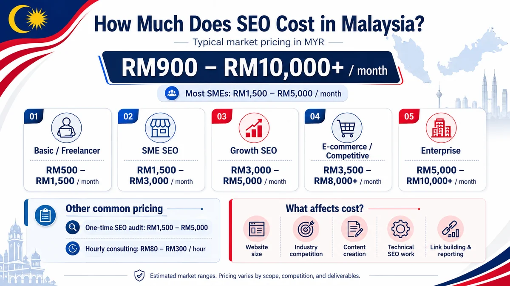

How much does SEO cost in Malaysia?
SEO pricing in Malaysia varies widely — from budget packages to enterprise retainers — and the difference is not just price. Here is what the market actually looks like in 2026, what drives cost up or down, and how to judge any quote you receive.
One of the most common questions we receive from Malaysian business owners is "how much should I be paying for SEO?" The honest answer is: it depends on your goals, your competition and the current health of your website. What we can do is give you a clear picture of what different budget levels typically buy, so you can enter any conversation with a realistic benchmark.
Pricing models: retainer, project or hourly?
Most reputable SEO agencies in Malaysia work on one of three models. Understanding the model matters as much as the price tag itself.
- Monthly retainer. The most common model. You pay a fixed fee each month for an agreed scope of work — technical audits, on-page optimisation, content and link building. This suits businesses that want consistent, compounding growth.
- Project-based. A fixed price for a defined deliverable — a site migration, a technical audit, or a one-time content build. Useful for solving a specific problem, but it does not maintain or grow rankings on its own.
- Hourly consulting. Typically RM 200–600 per hour depending on seniority. Best for in-house teams that need guidance rather than full execution.
Typical SEO price ranges in Malaysia (2026)
The market broadly splits into three tiers. These are typical observed ranges — not a quote for your specific situation, which depends on scope and competition.
- RM 800–1,500/month — entry level. Usually covers basic on-page fixes and a small number of keywords. Can work for very local or niche businesses with low competition. Expect limited content and minimal link building.
- RM 1,500–4,000/month — mid-market. The sweet spot for most SMEs targeting city-level or national keywords. Should include regular content production, technical maintenance and active link building.
- RM 4,000–8,000+/month — competitive or multi-market. Appropriate for e-commerce, financial services, legal or healthcare sectors, or for businesses targeting multiple languages (English, Bahasa Malaysia, Mandarin). Larger content calendars and stronger authority-building are included.
What actually drives SEO cost?
Price is a function of the work required to achieve results, not an arbitrary figure. The main factors are:
- Keyword competition. Ranking for "lawyer KL" or "property investment Malaysia" requires far more authority than ranking for a long-tail local service term. Higher competition = more content, more links, longer timeline.
- Current site health. A website with technical debt — slow load times, crawl errors, thin content — needs remediation work before growth work can begin. That adds to early-phase cost.
- Scope of languages and markets. A bilingual or trilingual campaign (EN + BM + ZH) requires separate keyword research, separate content production and separate authority building for each language. The effort roughly multiplies.
- Content requirements. Authoritative, E-E-A-T-compliant content takes genuine research and skilled writing. Agencies that quote very low are usually skipping this or outsourcing it to low-quality writers — which Google's helpful-content systems now penalise heavily.
Why cheap SEO is usually a false economy
We regularly speak with businesses that have spent 12–18 months and RM 15,000–30,000 on low-cost SEO packages and ended up worse off than when they started. Here is why that happens. Low-cost packages almost always rely on one or more of: spammy backlinks from link farms, thin auto-generated content, or keyword stuffing. Google's spam updates — released multiple times a year — are specifically designed to devalue these tactics. The cleanup after a manual or algorithmic penalty can cost more than a year of quality SEO, and the trust signals take months to rebuild. The cheapest SEO is rarely the most affordable SEO over a 24-month horizon.
How to compare quotes honestly
When you receive competing quotes, ask these questions before deciding on price alone:
- What exactly is in scope each month? Ask for a written breakdown — number of pages optimised, content pieces produced, links acquired and reports delivered.
- Who will actually do the work? Some agencies sell at a premium but subcontract to overseas freelancers. Others are transparent about their team. Ask to see examples of their content and link placements.
- What does success look like, and by when? Be wary of guarantees ("page 1 in 30 days") — no ethical agency can guarantee Google rankings. What you should see is a clear set of measurable milestones tied to realistic timelines.
- Are the links and content yours to keep? If you cancel, do you retain the content and the link profile built on your behalf? This is an important ownership question.
NEXT SEO24 publishes fixed monthly plans on our Pricing page so you can benchmark before any conversation. We are also happy to audit any quote you have received and explain what the work should realistically include.
Frequently asked questions
Is SEO a one-time cost or monthly?
SEO is almost always an ongoing monthly investment. Search rankings require continuous maintenance — fresh content, technical fixes, link building and monitoring. A one-time project can address a specific problem, but sustained visibility needs sustained effort.
Why is SEO cheaper than Google Ads over time?
With Google Ads you pay for every click; the moment you stop, your traffic stops too. SEO builds equity in your domain — rankings you earn keep sending traffic even during quieter months. Most businesses find that after 12–18 months, the cost-per-lead from SEO is significantly lower than paid search.
Do you offer fixed pricing?
Yes. NEXT SEO24 publishes transparent monthly plans on our Pricing page so you know exactly what is included before any conversation starts. Custom scopes are available for enterprise or multi-market campaigns.
Want to know what SEO should cost for your business?
Get a free, no-obligation review of your website and a plain-English explanation of what it would realistically take to rank — and what it should cost. No upsell, no pressure.
Chat on WhatsApp →